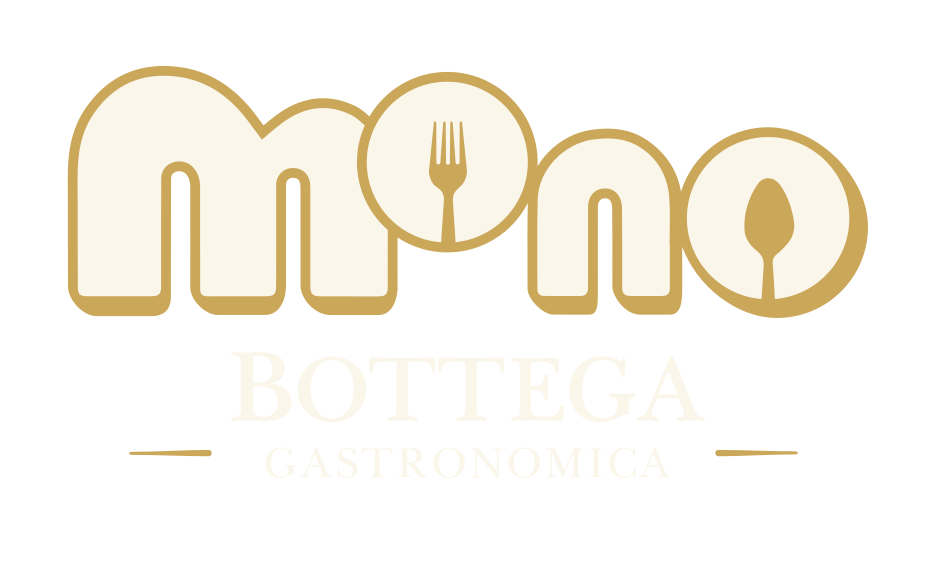

La cucina quotidiana, rifatta come si deve.
Piatti caldi e freddi, classici italiani e piemontesi, sughi, contorni e preparazioni da rigenerare.
Scopri la gastronomia
Bottega gastronomica contemporanea · Torino, Santa Rita
MONO prende i sapori che conosci, li cucina con tecnica e li rende semplici da scegliere, portare a casa e condividere. Gastronomia, pasticceria e aperitivo, con una sola regola: fare bene le cose buone. Gastronomia, dolci e aperitivo a Santa Rita: poche cose, fatte bene, da scoprire in bottega.
Prossima apertura · Via Barletta 72D, Torino.
Quello che trovi da MONO
Il banco cambia con le stagioni, ma non cambia la promessa: cucina autentica, prodotti riconoscibili e preparazioni pensate per arrivare bene fino alla tua tavola.
Non vogliamo avere tutto. Vogliamo fare bene ciò che merita di esserci.
Piatti caldi e freddi, classici italiani e piemontesi, sughi, contorni e preparazioni da rigenerare.
Scopri la gastronomiaSpecialità riconoscibili, generose e costruite per diventare abitudini. La selezione cambia con il banco.
Scopri le firme MONOMonoporzioni, torte, creme e piccoli regali gastronomici: puliti nel gusto, curati nella forma.
Scopri la pasticceriaVino, cocktail, analcolici, pane, olio e piccoli piatti: poche cose scelte bene, tempo giusto per restare.
Scopri l'aperitivoCucina contemporanea. Tradizionalmente moderna.
MONO è una bottega gastronomica contemporanea nata per portare la cura della cucina professionale dentro la vita reale: piatti pronti, preparazioni da rigenerare, dolci, aperitivi e prodotti da portare a casa.
Prendiamo la memoria della cucina italiana e piemontese, la lavoriamo con metodo e le diamo una forma attuale: più chiara da scegliere, più semplice da vivere, più facile da ricordare.
Nessun lusso ostentato. Nessuna complicazione inutile. Solo ingredienti scelti bene, tecnica, porzioni leggibili, prezzi chiari e un'esperienza che continua anche dopo essere usciti dalla bottega.
La differenza MONO
MONO supera la confusione della gastronomia tradizionale senza perdere il suo calore. La qualità si sente nel piatto. La differenza si vede in tutto il resto.
Capisci subito cosa stai scegliendo, per quante persone e per quale momento.
Niente sorprese inutili: il valore deve essere comprensibile prima del banco.
Alcune preparazioni sono pensate per arrivare bene fino alla tua tavola.
Protegge il prodotto, spiega come viverlo e continua il racconto anche a casa.
MONO Convivium
MONO Convivium unisce impresa, formazione e comunità dentro un contesto di lavoro autentico. Non è beneficenza decorativa: sono ruoli reali, affiancamento, standard professionali e crescita progressiva.
Leggi il progetto completo
Percorsi chiari. Affiancamento vero. Autonomia possibile.
App MONO
Il sito racconta MONO. L'app fa succedere le cose: ordini, scegli il ritiro, raccogli punti, accedi ai vantaggi e resti aggiornato sulle novità della bottega.
Dove siamo
MONO nasce in un quartiere vero, vissuto ogni giorno da famiglie, lavoratori e persone che cercano qualità senza formalità.
Apri Google Maps e raggiungi la bottega con il percorso più semplice.
Apri Google MapsMartedì-sabato 10:30-14:30 e 18:00-22:30.
Domenica 9:00-14:00. Lunedì chiuso.
Per catering, gifting e richieste generali scrivi alla bottega.
monobottega@gmail.comCandidature in bottega e percorsi Convivium hanno canali dedicati.
Vai alla paginaGastronomia Torino · Santa Rita
Se cerchi una gastronomia a Torino, una bottega a Santa Rita o un posto dove prendere qualcosa di buono senza formalità, MONO vuole diventare questo: cucina quotidiana rifatta come si deve, vicino a casa.
Piatti pronti, preparazioni da portare a casa e cucina contemporanea con cura da bottega.
Scopri gastronomiaVia Barletta 72D: indirizzo, orari, mappa e contatti sempre a portata di mano.
Vai ai contattiIl sito racconta MONO. L'app gestisce ordini, wallet, punti, sconti e inviti.
Scopri appFormazione, inclusione e lavoro dignitoso: il progetto sociale resta dentro la bottega.
Scopri ConviviumDomande rapide
Una bottega gastronomica contemporanea: cucina artigianale, pasticceria, aperitivo e prodotti da portare a casa.
In Via Barletta 72D, nel quartiere Santa Rita di Torino. Dalla pagina contatti puoi aprire Google Maps.
No. La struttura è riconoscibile, ma prodotti e disponibilità possono cambiare in base alla stagione e alla produzione del giorno.
È il progetto di formazione e inclusione lavorativa di MONO, basato su ruoli reali, affiancamento e autonomia.
Santa Rita, Torino